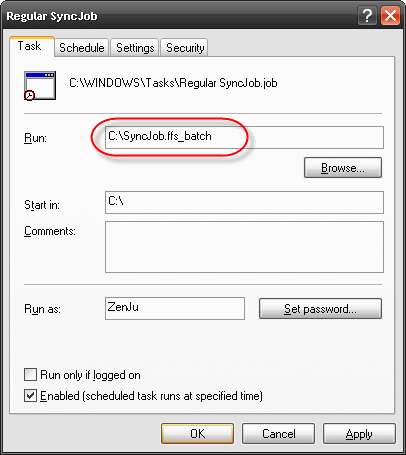
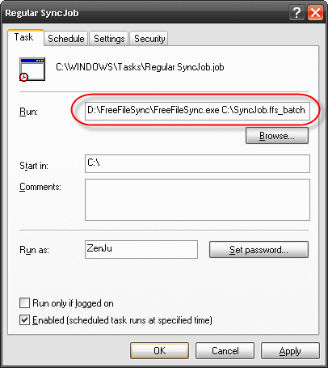

Create
a new batch job via FreeFileSync's main
dialog:
Menu->Advanced->Create batch job and save
it, for example, as "C:\SyncJob.ffs_
batch".
Make sure you enable checkbox "Silent mode" to prevent showing a status dialog at the end of the process.
If you want to avoid error or warning popup messages from stopping the process set "Error handling" to either "Exit instantly" or "Ignore errors".
Start Windows Task Scheduler: Go to Start->Control Panel->Scheduled Tasks and select "Add Scheduled Task".
Follow the wizard and choose "C:\SyncJob.ffs_batch" as program to run.
If
you are using the locally installed version of FreeFileSync,
*.ffs_batch files
are automatically associated with the tool and field "Run:"
can be directly filled with the filename:
"C:\SyncJob.ffs_batch"

If
file associations have not been set (portable installation),
"Run:"
has to be prefixed with the
executable:
"D:\FreeFileSync\FreeFileSync.exe"
"C:\SyncJob.ffs_batch"
